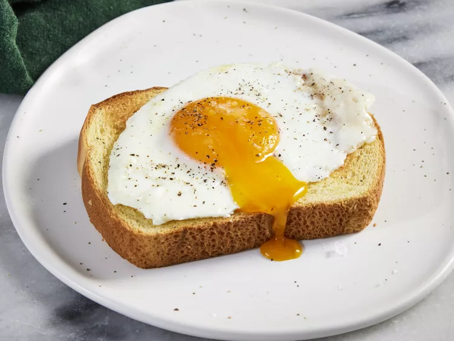

Basted Eggs

Description
A nicely fried, butter-basted egg with a warm runny yolk.
Ingredients
- 1 1/2 tablespoons salted butter
- 2 large eggs
- 1 tablespoon water
- 1/8 teaspoon freshly ground black pepper
- 1 pinch flaky sea salt, or to taste
Steps
- Melt butter in a medium nonstick skillet over medium heat. Carefully crack eggs into the skillet and let cook until whites have almost set, about 1 minute.
- Add water, cover skillet with a lid or cookie sheet, reduce heat to medium-low.
- Let cook until whites have set, yolks are still runny, and some of white has set over yolk, 1 to 2 more minutes. Remove lid and transfer eggs to a serving plate. Garnish with pepper and flaky salt, if desired. Serve immediately.